Mathematical Deep Dive: Core ML Models¶
This page is an expanded mathematical deep dive of the model families used across this training hub. It is designed as a practical reference for engineers who want both formula-level understanding and production intuition. Every section follows the same rhythm: what the model assumes, the objective it optimizes, how it is trained, the kinds/variants it comes in, how to tune it, and how it fails.
How to use this page¶
- Start with the objective function and assumptions.
- Review optimization behavior and regularization knobs.
- Check failure modes before deployment.
- Connect to metric choice in the performance module.
What this page covers (overview)¶
The table below is a map of everything explained later on. Read it top-to-bottom as a rough order of increasing capacity (and increasing risk of overfitting): linear models are the simplest and most interpretable, neural networks the most flexible and the most data-hungry. "Where it shines" is the single best reason to reach for each family.
| # | Model family | Learning type | Output | Where it shines | Main weakness | Key hyperparameters |
|---|---|---|---|---|---|---|
| 1 | Linear Regression | Supervised (regression) | Continuous value | Interpretable tabular baselines, trend estimation | Misses nonlinearity, sensitive to outliers | regularization \(\lambda\), penalty type |
| 2 | Logistic Regression | Supervised (classification) | Class probability | Calibrated probabilities, interpretable risk scoring | Linear decision boundary only | \(\lambda\), class weights, threshold \(\tau\) |
| 3 | Naive Bayes | Supervised (classification) | Class probability | Text/spam, very high-dimensional sparse data | Independence assumption, weak calibration | smoothing \(\alpha\), distribution choice |
| 4 | Support Vector Machine | Supervised (class./regr.) | Class or value | Clear margins, medium-size complex boundaries | Scales poorly to large \(N\), needs scaling | \(C\), kernel, \(\gamma\) |
| 5 | Decision Tree | Supervised (class./regr.) | Class or value | Human-readable rules, mixed data types | Overfits, unstable to small data changes | max depth, min samples, criterion |
| 6 | Random Forest | Supervised ensemble (bagging) | Class or value | Robust tabular baseline with little tuning | Larger memory/latency, less interpretable | n_estimators, max_features, depth |
| 7 | Gradient Boosting | Supervised ensemble (boosting) | Class or value | Best-in-class tabular accuracy | Tuning sensitivity, overfit risk | learning_rate, n_estimators, depth/leaves |
| 8 | Neural Network (MLP) | Supervised (class./regr.) | Class or value | Unstructured data, complex interactions | Data hunger, harder to interpret/operate | layers, width, learning rate, dropout |
| 9 | Time-Series Models | Supervised (forecasting) | Future values | Temporal/seasonal data, demand & capacity | Needs chronological care, drift-prone | order \((p,d,q)\), seasonality, horizon |
Families 1-3 are parametric and convex (a single global optimum, fast to train). Families 4-9 trade that guarantee for flexibility: trees and ensembles capture nonlinear interactions, and neural networks approximate almost any function given enough data. Sections 10 and 11 then compare them side-by-side and give an Azure ML selection workflow.
Tip - Reading the math: Throughout, \(X\) is the feature matrix (\(N\) rows, \(d\) columns), \(y\) the target, \(\theta\) or \(w\) the learned weights, and \(\mathcal{L}\) a loss. "Convex" means gradient descent cannot get stuck in a bad local optimum; "non-convex" (trees, deep nets) means training is a heuristic search and results depend on initialization and data order.
What the mathematical components actually mean (in action and in value)¶
Every model below is built from the same handful of mathematical ideas. The formulas look different, but they are doing the same jobs. This section decodes each recurring component: what it is, what it does in action during training or prediction, and what value it delivers to a real project. Read this once and the rest of the page becomes pattern-matching.
The model function \(f_\theta(x)\) : the thing that makes predictions¶
- What it is: a formula with adjustable numbers (parameters \(\theta\)) that maps an input \(x\) to an output \(\hat{y}\). For linear regression it is a weighted sum; for a neural network it is layers of weighted sums and nonlinearities.
- In action: at prediction time this is literally the arithmetic your endpoint runs on each request: plug in the features, get a number out. The weights \(\theta\) are frozen after training, so serving is just fast, deterministic math.
- Its value: the parameters are where the "learning" is stored. A 50 MB model file is just a big list of these numbers. Interpretable parameters (a regression coefficient) double as business insight: "each extra year of tenure lowers churn risk by X".
The objective / loss function \(\mathcal{L}\) : the definition of "wrong"¶
- What it is: a single number that measures how badly the current model fits the data. Squared error for regression, cross-entropy for classification, hinge loss for SVMs.
- In action: training is nothing more than searching for parameters that make this number small. The loss is the scoreboard the optimizer plays against; change the loss and you change what the model considers a good answer.
- Its value: this is your main lever for encoding business priorities into math. Caring more about rare fraud than common legit traffic? Weight the loss. Big errors much worse than small ones? Use squared error. The loss is where strategy becomes a number a computer can chase.
Optimization and the gradient \(\nabla_\theta \mathcal{L}\) : how the model learns¶
- What it is: the gradient is the slope of the loss with respect to every parameter : a vector pointing in the direction that increases error fastest. Gradient descent steps the opposite way: \(\theta_{t+1} = \theta_t - \eta\,\nabla_\theta\mathcal{L}\).
- In action: training repeats "measure error, compute gradient, nudge weights downhill" thousands of times. The learning rate \(\eta\) is the step size: too big and training diverges, too small and it crawls. This loop is what consumes your GPU hours.
- Its value: gradients are why models can have millions of parameters and still train : you never search blindly, you always know which way is downhill. Understanding this explains most training failures (loss exploding, loss stuck, loss oscillating).
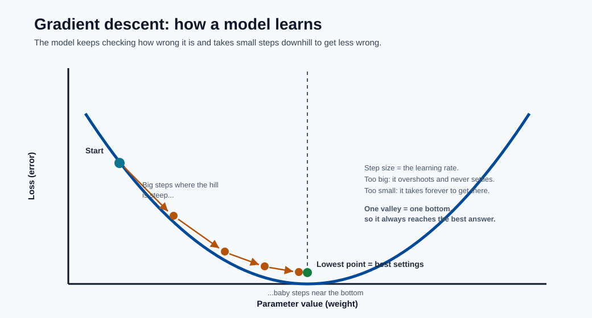
The picture above is the whole idea in one image: the curve is the loss, the dots are successive training steps, and the gradient is just the slope under each dot. Steps are large where the slope is steep and shrink to nothing at the bottom, which is the model arriving at its best weights.
Convexity : the guarantee that training "just works"¶
- What it is: a convex loss is bowl-shaped : it has exactly one bottom. Non-convex losses (trees, deep nets) are a mountain range with many valleys.
- In action: for convex models (linear, logistic, SVM) the optimizer always lands at the single best answer, regardless of where it starts. For non-convex models, different random seeds give different results, so you set seeds, run multiple times, and validate carefully.
- Its value: convexity buys reproducibility and trust with almost no tuning : a huge reason simple models are still the right call for many production systems and audits.
Regularization (\(\lambda\|\theta\|\)) : the brake that prevents memorizing¶
- What it is: an extra penalty added to the loss that grows when weights get large, so the model is rewarded for staying simple. \(L_2\) shrinks weights smoothly; \(L_1\) zeroes some out.
- In action: during training it pulls back on parameters that only fit noise, trading a bit of training accuracy for better performance on unseen data. The strength \(\lambda\) is the single knob that moves the model along the underfit-to-overfit spectrum.
- Its value: this is the generalization dial. It is the difference between a model that scores 99% in the demo and fails in production, and one that scores 92% everywhere. Tuning \(\lambda\) is often the highest-ROI thing you do.
Probability, likelihood, and \(\arg\max\) : turning scores into decisions¶
- What it is: many models output a probability \(P(y\mid x)\) (sigmoid/softmax) and pick the class with the highest one via \(\arg\max\). Training often maximizes likelihood : finding parameters that make the observed data most probable.
- In action: at prediction time the model emits a confidence (e.g. 0.83), and a threshold \(\tau\) or \(\arg\max\) converts it into an action (approve/deny). That threshold is a business choice applied after the math.
- Its value: probabilities let you rank, prioritize, and set cost-aware cutoffs instead of getting a bare yes/no. Calibrated probabilities are what make pricing, triage, and risk-scoring systems possible.
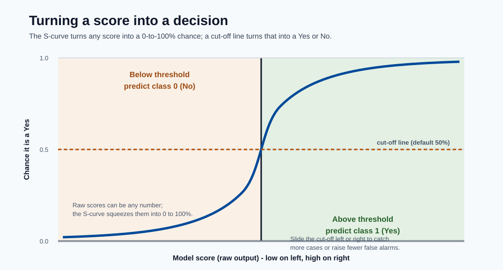
This is what "a score becomes a decision" looks like: the S-curve squashes any raw score into a probability, and the dashed threshold line is the business rule that turns that probability into a concrete Yes or No. Sliding the threshold left or right is how you trade catching more cases against raising fewer false alarms.
Linear algebra (\(X\theta\), \(X^TX\), kernels) : why any of this is fast¶
- What it is: stacking data into matrices and expressing predictions as matrix products. \(X\theta\) computes every row's prediction at once; kernels compute similarities in bulk.
- In action: vectorized matrix operations run on optimized BLAS/GPU hardware, so scoring a million rows is one matrix multiply, not a million loops.
- Its value: this is the engineering reason ML is practical at scale. It also explains cost and latency: model size and feature count translate directly into FLOPs per request.
Note - The one-sentence summary: A model is a function (\(f_\theta\)) whose parameters are chosen by an optimizer (gradient descent) to minimize a loss (your definition of wrong), kept honest by regularization (so it generalizes), and turned into decisions via probabilities and thresholds. Every section below is a specific choice of those five pieces.
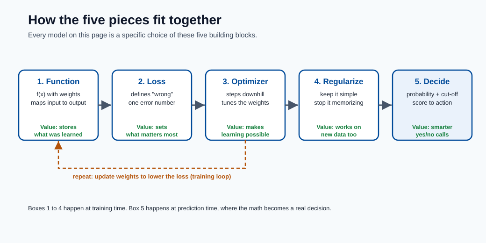
Use this diagram as a mental checklist: when you meet any model below, ask which function it uses, what loss it minimizes, how it optimizes, how it regularizes, and how it makes the final call. Those five answers fully describe it.
1) Linear Regression¶
Linear regression is the foundational regression model and the mental anchor for almost everything else: it predicts a continuous target as a weighted sum of features. It is the model you reach for first because it is fast, interpretable, and gives a baseline that more complex models must beat to justify their cost.
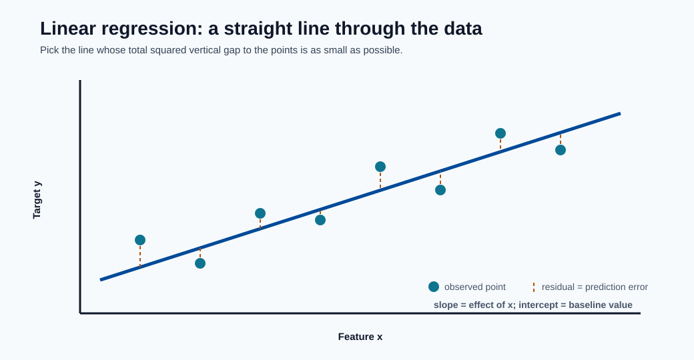
The line is the model and the dashed segments are the residuals : least squares simply picks the line whose squared residuals add up to the smallest total. The slope is each feature's effect and the intercept is the baseline value when every feature is zero.
Model form:
Each coefficient \(\theta_j\) is the expected change in \(\hat{y}\) for a one-unit increase in feature \(j\), holding all other features fixed : this is exactly why the model is so interpretable, and also why correlated features make individual coefficients hard to trust.
Least-squares objective:
We square the residuals for two reasons: it penalizes large errors disproportionately, and it yields a smooth, convex objective with a unique minimum. Minimizing squared error is also equivalent to maximum-likelihood estimation under Gaussian noise, which is the formal justification for the method.
Closed-form (normal equation, centered form):
This exact solution exists only because the problem is convex and quadratic. In practice we rarely invert \(X^TX\) directly (it is \(O(d^3)\) and numerically unstable when features are correlated); libraries use QR decomposition or, for large data, iterative gradient descent.
Assumptions and notes:
- Linearity: the target is a linear function of the features (you can still model curves by adding polynomial or interaction features).
- Independent, homoscedastic errors: residuals have constant variance and are uncorrelated.
- Low multicollinearity: highly correlated features inflate coefficient variance and make \(X^TX\) near-singular.
- Outlier sensitivity: because errors are squared, a few extreme points can dominate the fit.
- It remains a great baseline for tabular regression and a diagnostic tool even when a fancier model ships.
Regularized variants (the "kinds" of linear regression):
- Ridge (L2): adds \(\lambda\|\theta\|_2^2\). Shrinks coefficients smoothly toward zero, stabilizes correlated features, and never sets weights exactly to zero. Best when many features each contribute a little.
- Lasso (L1): adds \(\lambda\|\theta\|_1\). Drives some coefficients exactly to zero, so it performs automatic feature selection. Best when you expect only a few features to matter.
- Elastic Net: combines L1 and L2, \(\lambda_1\|\theta\|_1 + \lambda_2\|\theta\|_2^2\). Gets Lasso's sparsity while handling correlated feature groups gracefully.
- Polynomial / basis-expansion regression: still "linear in the parameters" but fits curves by transforming inputs (\(x, x^2, x^3, \dots\)).
Note - Azure ML connection: Linear models train in seconds, so they make ideal smoke-test baselines in an AutoML run. If a heavily tuned boosting model barely beats ridge regression, the extra serving cost and complexity may not be worth it.
2) Logistic Regression¶
Despite the name, logistic regression is a classification model. It takes the same linear score as linear regression and squashes it through the sigmoid function to produce a probability between 0 and 1. It is the default first model for binary classification because its outputs are calibrated, interpretable, and cheap to compute.
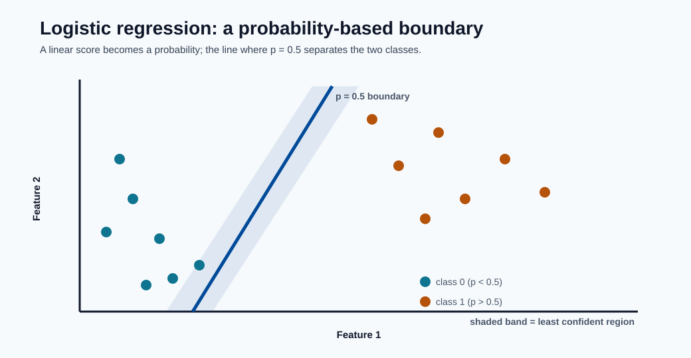
The boundary is the line where the predicted probability equals 0.5; points get more confidently classified the further they sit from it. The shaded band is the uncertain zone where small feature changes flip the prediction, which is exactly where threshold tuning matters most.
Binary probability:
The linear part \(\theta^Tx+b\) is called the logit or log-odds. Rearranging gives \(\log\frac{p}{1-p}=\theta^Tx+b\), so each coefficient \(\theta_j\) is the change in log-odds per unit of feature \(j\); exponentiating, \(e^{\theta_j}\) is an odds ratio, which is how these models are reported in risk and medical settings.
Binary cross-entropy loss:
This is the negative log-likelihood of the data under a Bernoulli model. It is convex, so there is a single global optimum, but unlike linear regression there is no closed form : it is solved iteratively with gradient descent, Newton's method, or L-BFGS.
Decision rule:
The threshold \(\tau\) is a business decision, not a model parameter. The default \(0.5\) is rarely optimal under class imbalance or asymmetric error costs; it is tuned afterward using the precision/recall trade-off from the performance-metrics module.
Kinds and extensions:
- Binary logistic regression: the base two-class case above.
- Multinomial (softmax) regression: generalizes to \(K\) classes with \(P(y=k\mid x)=\frac{e^{\theta_k^Tx}}{\sum_j e^{\theta_j^Tx}}\).
- Ordinal logistic regression: for ordered categories (low/medium/high).
- Regularized logistic regression: L1/L2/Elastic-Net penalties, exactly as in linear regression, to control overfitting in high dimensions.
Practical points:
- Coefficients are interpretable in log-odds space, which auditors and domain experts like.
- Class imbalance requires threshold tuning and often class weights (penalize errors on the rare class more heavily).
- Always run calibration checks (reliability curves) when probabilities, not just labels, drive downstream decisions such as pricing or triage.
- Features should be scaled when using regularization, so the penalty treats them comparably.
Note - Azure ML connection: Because the output is a probability, logistic regression pairs naturally with a threshold/cost policy at the endpoint: the model returns \(\hat{p}\), and the application decides the action (block, review, allow) based on tuned cutoffs.
3) Naive Bayes¶
Naive Bayes is a probabilistic classifier built directly from Bayes' theorem. Its "naive" simplifying assumption : that features are conditionally independent given the class : makes it extremely fast and surprisingly effective on high-dimensional sparse data such as text.
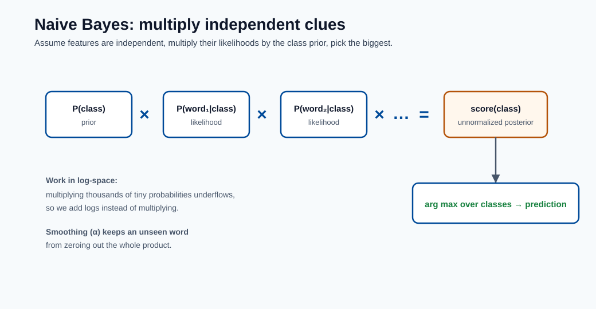
The picture is the whole model: multiply the class prior by one likelihood per feature, do that for every class, and take the largest. The independence assumption is what lets those per-feature terms simply multiply, and working in log-space turns the product into a safe sum.
Bayes rule with conditional independence:
\(P(y)\) is the prior (how common each class is), and each \(P(x_j\mid y)\) is the likelihood of seeing a feature value given the class. The product over features is exactly where the independence assumption enters : it lets us estimate \(d\) simple one-dimensional distributions instead of one intractable \(d\)-dimensional joint distribution.
Prediction:
We work in log-space to turn the product into a sum, avoiding numerical underflow when multiplying thousands of tiny probabilities (common in text with large vocabularies).
Kinds of Naive Bayes (the variant matches the feature distribution):
- Gaussian NB: continuous features modeled as normal distributions per class. Use for real-valued tabular data.
- Multinomial NB: discrete counts (e.g. word frequencies). The default for document/topic classification.
- Bernoulli NB: binary presence/absence features. Good for short texts where a word either appears or not.
- Complement NB: a multinomial variant that corrects for class imbalance, often better on skewed text corpora.
Why it works despite the assumption:
- Independence is often false, but the model only needs the correct class to get the highest score : accurate ranking survives even when the probability estimates are biased.
- It performs well for sparse high-dimensional text tasks (spam, sentiment, topic tagging) and trains in a single pass over the data.
Practical notes and failure modes:
- Laplace/additive smoothing (\(\alpha\)) is essential : without it, a single unseen feature-class combination produces a zero probability that wipes out the whole product.
- Correlated features double-count evidence, pushing probabilities toward 0 or 1, so the outputs are poorly calibrated even when labels are right.
- Treat its probabilities as scores, not trustworthy confidences, unless you recalibrate.
4) Support Vector Machines (SVM)¶
An SVM finds the decision boundary that maximizes the margin : the distance between the boundary and the nearest points of each class. The intuition is that the widest possible "street" between classes generalizes best. Only the points on the edge of that street (the support vectors) determine the boundary; everything else is irrelevant.
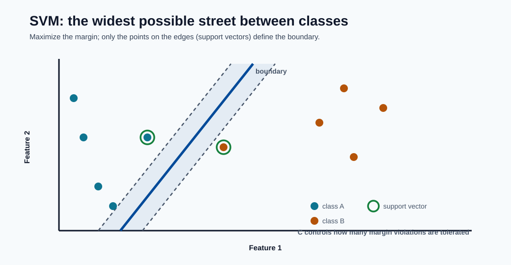
The solid line is the boundary and the dashed lines mark the edges of the widest "street" that still separates the classes. Only the circled support vectors touch those edges and define the fit; the parameter \(C\) decides how many points are allowed to sit inside the street.
Hard-margin formulation:
Minimizing \(\|w\|^2\) is equivalent to maximizing the margin \(2/\|w\|\). The hard-margin form assumes the data is perfectly separable : a fragile assumption that breaks on any noisy dataset.
Soft-margin (hinge loss):
The slack variables \(\xi_i\) allow some points to violate the margin, and \(C\) controls the trade-off: large \(C\) punishes violations hard (low bias, high variance, risk of overfitting), small \(C\) tolerates them (wider margin, more regularization). This is the single most important knob.
Kernel trick:
The kernel computes inner products in a high-dimensional feature space without ever forming that space explicitly, letting a linear margin in the transformed space become a curved boundary in the original one. Common kernels (the "kinds" of SVM):
- Linear: \(K=x_i^Tx_j\). Fast, best when data is already high-dimensional (e.g. text).
- Polynomial: \(K=(x_i^Tx_j+c)^p\). Captures feature interactions up to degree \(p\).
- RBF / Gaussian: \(K=\exp(-\gamma\|x_i-x_j\|^2)\). The flexible default; \(\gamma\) sets how far each point's influence reaches.
- Sigmoid: behaves like a two-layer neural net for certain parameters.
Related forms:
- SVR (Support Vector Regression) applies the same margin idea to regression using an \(\epsilon\)-insensitive tube around the prediction.
- One-Class SVM is used for novelty/anomaly detection.
Practical notes:
- Strong on medium-size datasets with clear class structure.
- Kernel SVM scales poorly on very large \(N\) (training is between \(O(N^2)\) and \(O(N^3)\)).
- Features must be scaled : distance-based kernels are dominated by large-magnitude features.
- Hyperparameters \(C\) and the kernel parameters (e.g. \(\gamma\)) dominate behavior and require cross-validated tuning.
5) Decision Trees¶
A decision tree splits the data into ever-smaller regions by asking a sequence of yes/no questions on features, producing a flowchart that a human can read directly. It is the building block of the most powerful tabular models (forests and boosting), so understanding it is key.
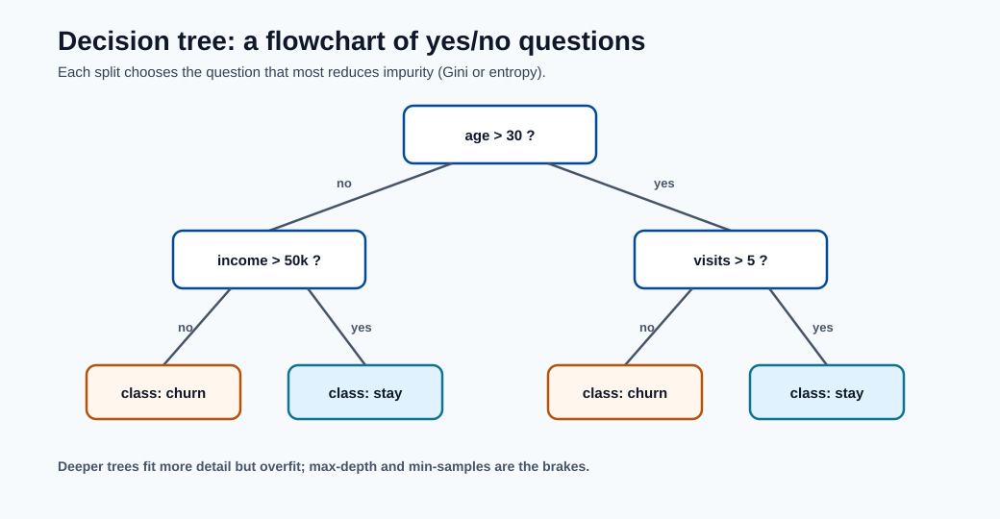
Each internal box is a yes/no question on one feature and each leaf is a prediction; following a row's answers from root to leaf is the entire inference process. The tree greedily picks the question that most reduces impurity at every node, which is why deeper trees fit more detail but risk memorizing noise.
Split criterion examples:
Both measure impurity : how mixed the class labels are in a node. Gini and entropy behave similarly; Gini is slightly cheaper to compute, entropy comes from information theory. A pure node (all one class) has impurity 0.
Information gain for split \(v\):
The tree is grown greedily: at each node it tries every feature and threshold and picks the split that most reduces impurity (largest information gain). It never reconsiders earlier splits, which is why trees are fast but not globally optimal.
Kinds and criteria:
- Classification trees use Gini or entropy and predict the majority class in a leaf.
- Regression trees split to minimize variance (or MSE) and predict the mean of the leaf's targets.
- Classic algorithms differ in detail: CART (binary splits, the scikit-learn default), ID3/C4.5 (multi-way splits, gain ratio).
Regularization (how you stop a tree from memorizing):
- max_depth: hard cap on how many questions deep the tree can go.
- min_samples_split / min_samples_leaf: require enough data in a node before/after a split.
- Cost-complexity pruning (\(\alpha\)): grow fully, then trim branches that add little.
Pros and risks:
- Highly interpretable, handles mixed numeric/categorical data, needs no feature scaling, and is insensitive to monotonic transforms.
- Unpruned trees overfit quickly : a deep tree can carve out a leaf for every training row.
- High variance: a small change in the data can produce a very different tree, which is the exact weakness that ensembles (Sections 6-7) were invented to fix.
6) Random Forest¶
A random forest is an ensemble of decision trees combined by averaging (regression) or voting (classification). It directly attacks the single tree's high-variance weakness: many decorrelated trees, each slightly wrong in a different way, average out to a stable prediction.
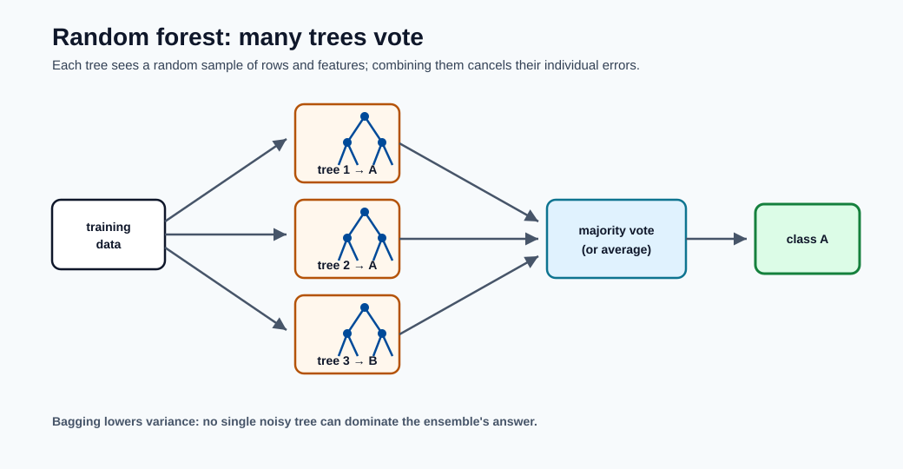
Each tree trains on its own random sample of rows and features, so they make different mistakes; the vote (or average) cancels those mistakes out. This is bagging : it lowers variance without increasing bias, which is why a forest is far more stable than any single tree.
Ensemble prediction (regression):
Classification via majority vote:
Core idea : two sources of randomness make the trees different:
- Bagging (bootstrap aggregation): each tree trains on a random sample of rows drawn with replacement, so no two trees see the same data.
- Random feature subsets: at each split a tree may only choose from a random subset of features, which prevents a few dominant features from making all trees look alike.
Averaging independent estimators reduces variance roughly in proportion to how decorrelated they are : that is the whole reason for injecting randomness, not just bagging.
Useful properties:
- Out-of-bag (OOB) error: rows not sampled for a tree act as a built-in validation set, giving a free generalization estimate without a separate hold-out.
- Feature importance: averaged impurity reduction (or permutation importance) ranks which features the forest relied on : though correlated features can share/dilute importance.
Related variant:
- Extremely Randomized Trees (Extra-Trees) also randomize the split thresholds, trading a little more bias for even lower variance and faster training.
Trade-offs and tuning:
- Strong baseline for tabular data with minimal tuning : often competitive out of the box.
- More trees (
n_estimators) only help (never overfit from count alone) but cost memory and inference latency;max_features,max_depth, andmin_samples_leafcontrol each tree. - Higher memory and inference cost than linear models; less interpretable than a single tree, though still explainable via importances and SHAP.
7) Gradient Boosting (XGBoost / LightGBM)¶
Gradient boosting builds an ensemble sequentially: each new tree focuses on the errors the current ensemble still makes. Where a random forest builds independent trees in parallel and averages them, boosting builds dependent trees in series and adds them : this is the difference between reducing variance (forests) and reducing bias (boosting), and it is why boosting tends to win accuracy contests on tabular data.
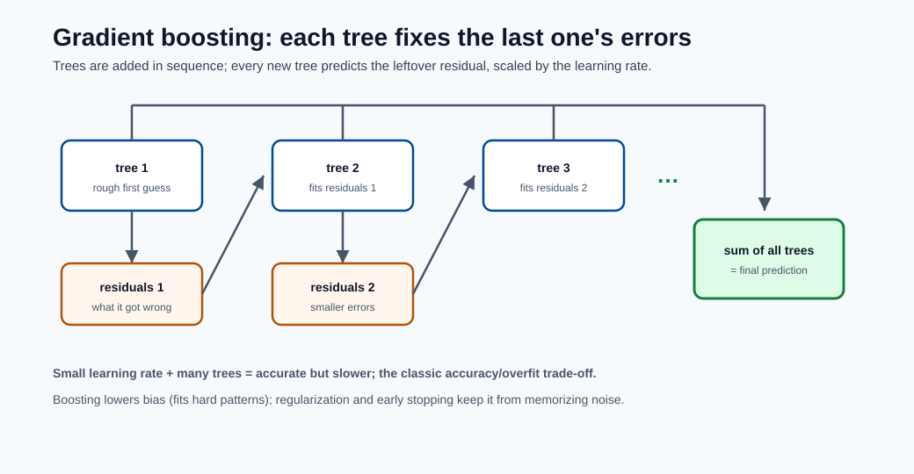
Unlike a forest's parallel vote, boosting adds trees in sequence: every new tree predicts the leftover error of the running sum, scaled down by the learning rate. Summing these corrections drives bias down step by step, while shrinkage and regularization keep it from chasing noise.
Additive stage-wise model:
where \(h_m\) is a small tree fit to the negative gradient of the loss (the direction that
most reduces error), and \(\nu\) is the learning rate (shrinkage). A small \(\nu\) means each
tree contributes a little, so you need more trees but generalize better : the classic
learning_rate vs n_estimators trade-off.
Generic regularized objective:
The second term \(\Omega\) penalizes tree complexity (number of leaves, leaf weights). Modern implementations such as XGBoost also use a second-order (Newton) expansion of the loss, using both gradients and Hessians to choose splits more precisely.
Kinds and implementations (the "flavors" of boosting):
- AdaBoost: the original, reweights misclassified points each round.
- Gradient Boosting Machines (GBM): the general gradient-descent-in-function-space view.
- XGBoost: regularized, second-order, level-wise tree growth; very robust.
- LightGBM: leaf-wise growth with histogram binning : fastest on large data, controlled by
num_leaves. - CatBoost: native, ordered handling of categorical features with less leakage.
Why it wins often on tabular data:
- Captures nonlinear interactions and feature thresholds automatically.
- Handles heterogeneous feature scales and missing values gracefully.
- Rich regularization and shrinkage controls let you trade bias for variance precisely.
Most important knobs (and what they do):
learning_rateandn_estimators: lower rate + more trees = better but slower.max_depthornum_leaves: tree capacity; the main overfitting lever.subsample,colsample_bytree: row/column sampling for regularization and speed.lambda_l1,lambda_l2,min_child_weight: penalize complexity.
Note - Azure ML connection: Boosting is the workhorse of AutoML's tabular runs. Because it is tuning-sensitive, pair it with early stopping on a validation set and HyperDrive/sweep search rather than hand-tuning.
8) Neural Networks (MLP basics)¶
A neural network stacks layers of linear transforms followed by nonlinear activations, letting it approximate almost any function given enough capacity and data (the universal approximation property). The multilayer perceptron (MLP) is the simplest form and the foundation for deep learning architectures.
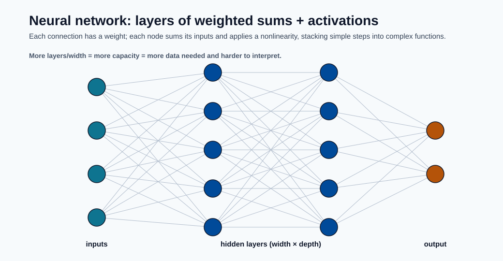
Every connection carries a weight and every node computes a weighted sum followed by a nonlinear activation; stacking these simple steps is what lets the network represent complex functions. More width and depth add capacity, which is powerful but demands more data and makes the model harder to interpret and operate.
Layer mapping (forward pass):
Each layer applies weights \(W^{(l)}\), a bias, and a nonlinearity \(\phi\). The nonlinearity is essential : without it, stacking layers would collapse into a single linear map. Common choices are ReLU (fast, default for hidden layers), sigmoid/tanh (older, prone to vanishing gradients), and softmax (output layer for multiclass probabilities).
Empirical risk minimization:
Gradient descent update:
Gradients are computed by backpropagation (the chain rule applied layer by layer). The objective is non-convex, so training finds a good local optimum, not a guaranteed global one : results depend on initialization, data order, and the optimizer. In practice \(\eta\) (the learning rate) is the single most important hyperparameter, and adaptive optimizers like Adam adjust it per-parameter for faster, more stable convergence than plain SGD.
Kinds of neural networks (beyond the MLP):
- MLP / fully-connected: tabular data and as building blocks.
- CNN (convolutional): images and spatial data; share weights across locations.
- RNN / LSTM / GRU: sequences and time series with memory of past steps.
- Transformers: attention-based; dominate language and increasingly vision.
Regularization options (capacity is high, so controlling it is mandatory):
- Weight decay (\(L_2\)): shrinks weights to reduce overfitting.
- Dropout: randomly zeros activations during training to prevent co-adaptation.
- Early stopping: halt when validation loss stops improving.
- Batch normalization and data augmentation: stabilize and enrich training.
Operational note:
- Capacity is high, so validation strategy and monitoring are mandatory.
- Neural nets are data-hungry and compute-hungry; for small/medium tabular data, boosting usually matches or beats them at a fraction of the cost.
- They are harder to interpret and operate (GPU serving, versioning), so reserve them for unstructured data (text, images, audio) or genuinely complex interactions.
9) Time-Series Forecasting Models¶
Time-series models predict future values from a sequence ordered in time. The defining difference from every other model on this page is that observations are not independent : today depends on yesterday, so order matters and the usual random train/test split is invalid.
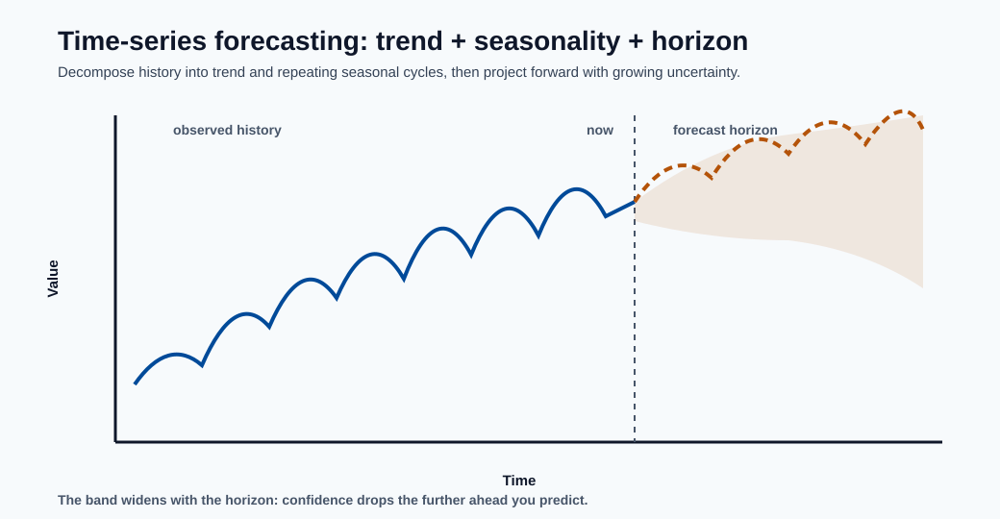
Forecasting decomposes the past into a trend plus repeating seasonal cycles, then projects them forward. The widening band past "now" is the key message : uncertainty grows with the horizon, so longer-range forecasts must report intervals, not just a single line.
Autoregressive family (AR):
An AR(\(p\)) model predicts the current value as a weighted sum of the previous \(p\) values plus noise. The companion MA(\(q\)) model instead regresses on the previous \(q\) forecast errors.
ARIMA combines them and adds differencing:
where \(B\) is the backshift operator (\(B y_t = y_{t-1}\)). The three orders \((p,d,q)\) are: \(p\) autoregressive terms, \(d\) rounds of differencing to remove trend (make the series stationary), and \(q\) moving-average terms.
Kinds of forecasting models:
- AR / MA / ARMA: stationary series without/with trend handling.
- ARIMA: adds differencing for trending data.
- SARIMA: adds seasonal terms for repeating cycles (weekly, yearly).
- Exponential smoothing (ETS / Holt-Winters): weights recent observations more heavily, with explicit trend and seasonal components.
- Prophet: decomposes into trend + seasonality + holidays; robust and easy to use.
- ML/DL approaches: gradient boosting on lag features, or LSTMs/Transformers for complex, multivariate series.
Practical forecasting constraints:
- Use chronological (rolling/expanding) validation only : never shuffle, or you leak the future into the past.
- Check stationarity (e.g. ADF test) and difference or transform as needed.
- Evaluate both scale-dependent (MAE, RMSE) and percentage (MAPE, sMAPE) metrics.
- Refit cadence should follow drift and seasonality changes; forecasts degrade as the horizon lengthens, so report uncertainty intervals, not just point predictions.
10) Model Comparison from a Mathematical Lens¶
The table below summarizes the trade-offs that recur throughout this page. The single most useful pattern: convex models (top rows) give you stability and speed, while non-convex, high-capacity models (lower rows) give you flexibility at the cost of tuning effort and overfitting risk.
| Family | Main objective | Typical optimization | Common risk |
|---|---|---|---|
| Linear/Logistic | Convex loss + optional regularization | Deterministic convex methods | Underfitting nonlinear patterns |
| Naive Bayes | Maximize class posterior | Closed-form counting | Independence assumption, poor calibration |
| SVM | Margin maximization + hinge loss | Quadratic optimization | Scaling on large datasets |
| Trees/Forests | Impurity minimization | Greedy recursive splitting | Overfit without constraints |
| Boosting | Additive loss reduction | Gradient-based stage updates | Overfit if too many deep trees |
| Neural Nets | Non-convex empirical risk minimization | SGD/Adam backprop | Instability, data hunger |
| Time-Series | Minimize forecast error on ordered data | Likelihood / least squares | Leakage if not validated chronologically |
A few cross-cutting themes worth internalizing:
- Bias-variance: linear/Naive Bayes are high-bias/low-variance; deep trees and neural nets are low-bias/high-variance. Ensembles (forests, boosting) deliberately engineer a better middle ground.
- Interpretability vs accuracy: roughly decreases as you move down the table. Pick the least complex model that meets the accuracy bar.
- Scaling sensitivity: distance- and gradient-based models (SVM, neural nets, regularized linear) need feature scaling; tree-based models do not.
11) Choosing the Right Model in Azure ML¶
Suggested workflow:
- Start with linear/logistic and tree baselines.
- Move to boosting for tabular accuracy gains.
- Use neural architectures for unstructured data.
- Validate with business-aligned metrics and threshold policy.
- Deploy with monitoring for drift, latency, and calibration.
A practical decision guide based on the data you have:
- Small tabular, interpretability required: linear/logistic regression or a single shallow tree. Cheap, auditable, fast.
- Medium tabular, accuracy matters: gradient boosting (XGBoost/LightGBM) is usually the best default; a random forest is the no-tuning fallback.
- High-dimensional sparse text: Naive Bayes or linear models as baselines, then move up.
- Clear margins, medium \(N\): SVM with an RBF kernel.
- Unstructured data (images, audio, language): neural networks (CNNs, RNNs, Transformers).
- Time-ordered data: ARIMA/SARIMA or Prophet first, then boosting on lag features or sequence models if needed.
A mathematically elegant model is not automatically the best production model. In practice, the best model maximizes business value under latency, cost, governance, and maintainability constraints. The disciplined path is to establish a simple baseline first, then only add complexity when it earns its keep on a metric that the business actually cares about.